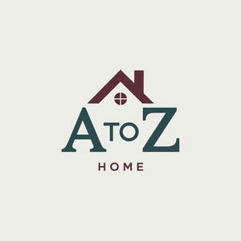

Trade Mark Journal No.2025/035 29 August 2025
UK00004246818 8 August 2025 (20)

- Class 20
- Neck pillows; Pillows; Neck support cushions; Neck pillows [other than for medical or surgical use]; Baby head support cushions; Nursing pillows; Inflatable pillows; Head positioning pillows for babies; Chair cushions; Head supporting pillows; Bath pillows; Nap mats [cushions or mattresses]; Cushions; U-shaped pillows; Mattress pads; Throw pillows; Bamboo pillows; Stuffed pillows; Beds, bedding, mattresses, pillows and cushions; Memory foam pillows; Maternity pillows; Seat cushions; Travel pillows; Pet cushions; Bedding for nursery cots [other than bed linen]; Bedding for cots [other than bed linen]; Bedding, except linen; Bed mattresses; Beds; Mattresses; Feather beds; Bumper guards for cots, other than bed linen; Infant beds; Soft furnishings [cushions]; Furniture and furnishings; Storage boxes for pillows [furniture]; Sleeping mats for camping [mattresses]; Cushions [furniture]; Nursery furniture; Bathroom furniture; Straw mattresses; Furniture being convertible into beds; Furniture for bathrooms; Furniture; Upholstered furniture; Metal furniture and furniture for camping; Dressers [furniture]; Wooden furniture; Credenzas [furniture]; Furniture cabinets; Cabinets [furniture]; Patio furniture; Bentwood furniture; Pouffes [furniture]; Kitchen furniture; Washstands [furniture]; Bedroom furniture; Cupboards being furniture; Outdoor furniture; Drawers for furniture; Benches [furniture]; Household furniture; Garden furniture; Lawn furniture; Desks [furniture]; Furniture shelves; Shelves [furniture]; Panelling for furniture; Furniture for kitchens; Kitchen dressers [furniture]; Wooden shelving [furniture]; Stationery cabinets [furniture]; Tables [furniture]; Shop furniture; Furniture moldings; Seating furniture; Office furniture; Furniture (Office -); Indoor furniture; Furniture for storage; Storage furniture; Furniture racks; Racks [furniture]; Bamboo furniture; Furniture of metal; Metal furniture; Furniture parts; Furniture partitions; Furniture chests; Pet furniture; Lockers [furniture]; Furniture for vivariums; Furniture for offices; Pedestals [furniture]; Furniture partitions of wood; Partitions of wood for furniture; Furniture (Partitions of wood for -); Consoles [furniture]; Antique style furniture; Furniture for shops; Doors for furniture; Furniture doors; Transformable furniture; Mirrors [furniture]; Furniture for washrooms; Stackable furniture; Glass furniture; Trestles [furniture]; Metal cabinets [furniture]; Inflatable furniture; Furniture (Inflatable -); Wooden racks [furniture]; Garden furniture manufactured from wood; Seats [furniture]; Furniture for children; Furniture for caravans; Shelves being nursery furniture; Computer furniture; Modular bathroom furniture; Drawers [furniture parts]; Drawers as furniture parts; Legs for furniture; Furniture for saunas; Furniture for camping; Furniture screens; Domestic furniture; Cane furniture; Furniture for babies; Pet crates; Pet grooming tables; Pet houses; Grooming tables for pets; Kennels for household pets; Inflatable pet beds; Cushions for lining pet crates; Portable beds for pets; Furniture units; Furniture frames; Picnic units [furniture]; Storage boxes [furniture]; Shelf units [furniture]; Furniture for campers; Furniture incorporating beds; Furniture for sitting; Toy boxes [furniture]; Furniture for motor homes; Lounge furniture; Cushions (Pet -); Cushions (upholstery); Baby walkers; Electric baby cradles; Baby gates; Baby bolsters; Cribs for babies; Cots for babies; Playpens for babies; Bath seats for babies; Baby changing tables; Reusable baby changing mats; Baby changing platforms; Furniture for house, office and garden; Plastic garden furniture; Plastic furniture for gardens; Kneeling pads for garden use; Sofa beds; Bed frames; Air bed lounger; Bed heads; Bed bases; Frames for bed canopies; Cat beds; Dog beds; Transportable beds; Mattress (Straw -); Mattress toppers.
A2Z TRENDZ LTD